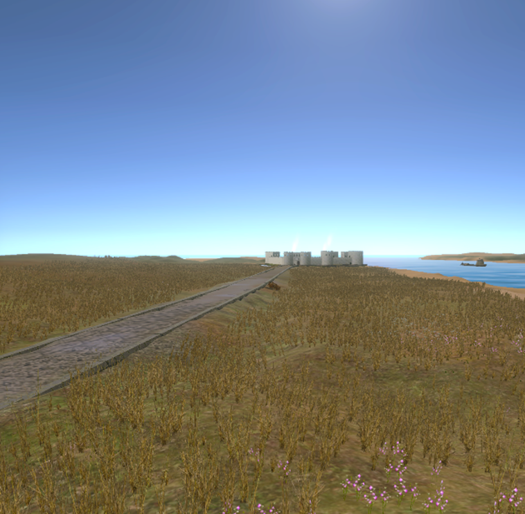
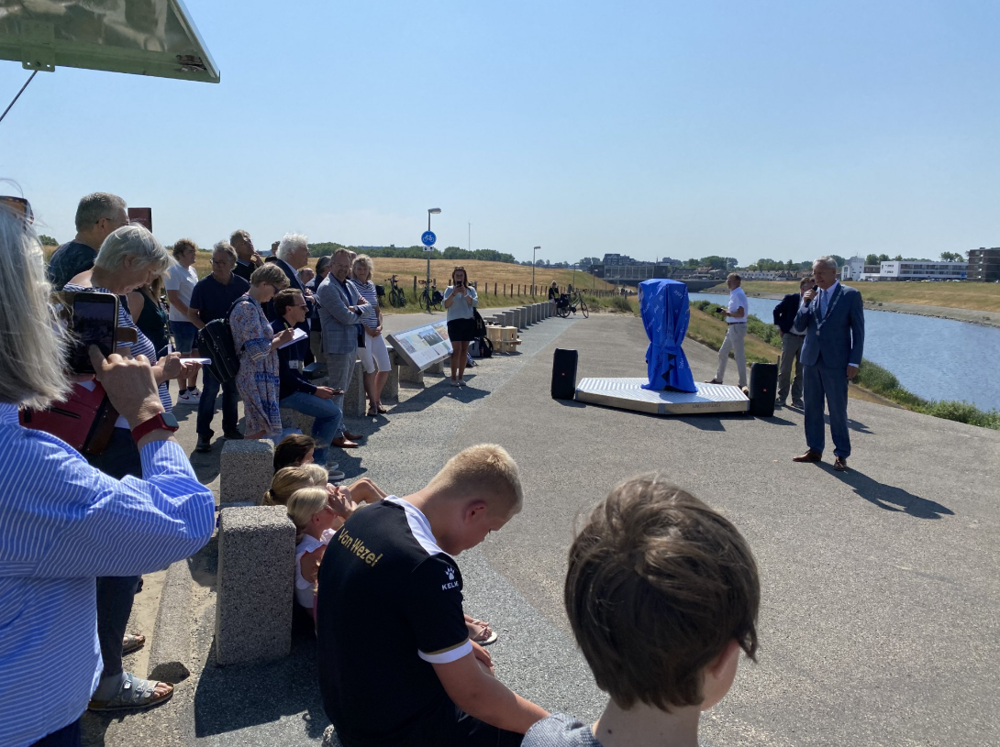
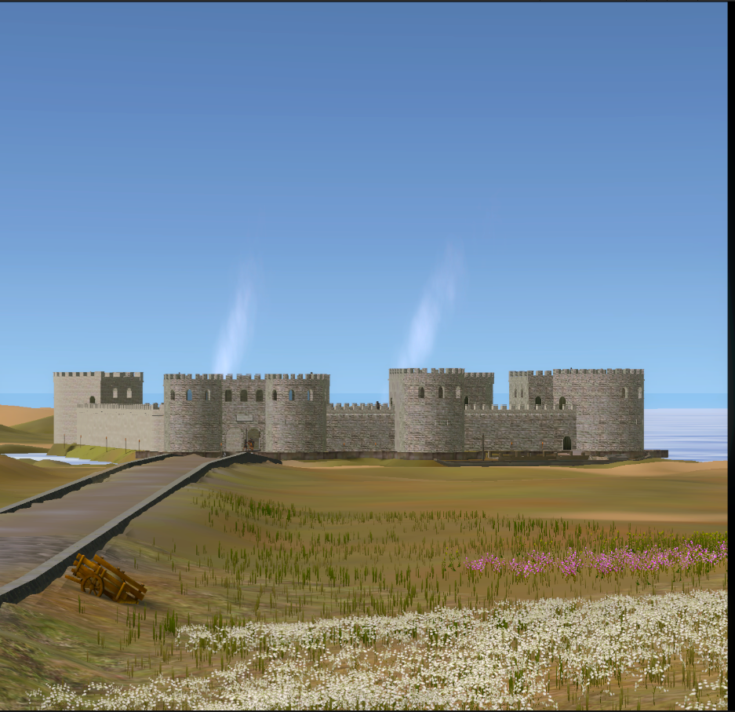
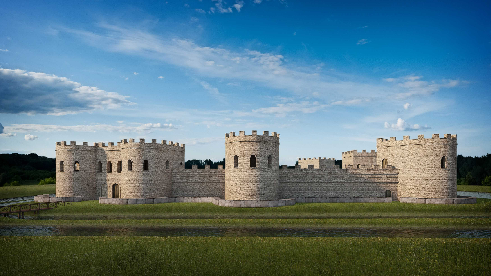
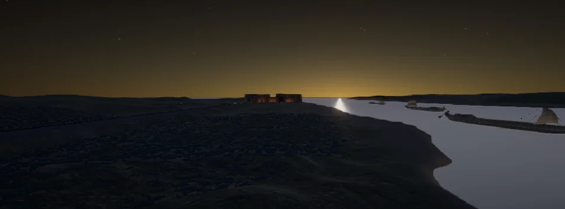
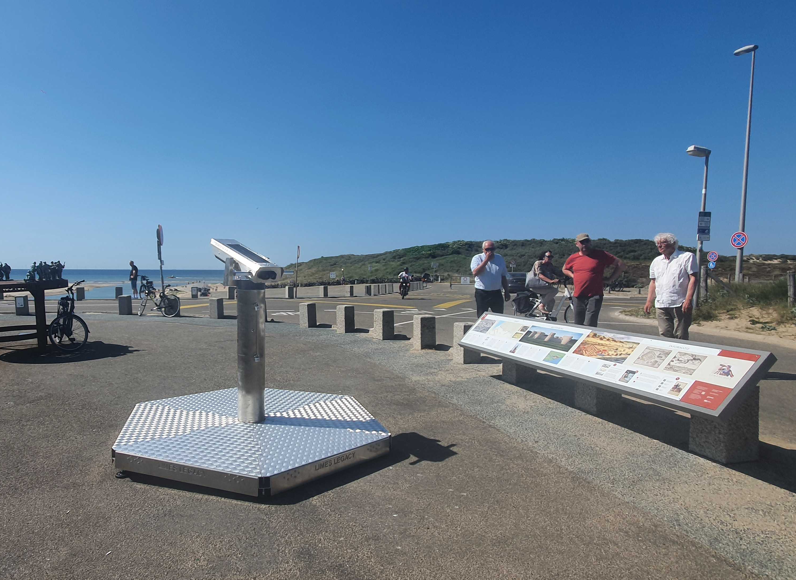

The Limescope is a virtual reality installation that brings the lost Roman fort Brittenburg back to life. Using Unity and historical research, I developed the software that allows visitors to explore the reconstructed fort and its surroundings as it appeared in the 4th century. Installed in Katwijk, the VR binocular setup offers an immersive way to connect with cultural heritage, blending technology, history, and education into one unique experience.
- Immersive 3D World: A historically accurate recreation of the Brittenburg fort and surrounding dune landscape.
- Dynamic Environments: Real-time day and night cycle with realistic lighting and atmospheric effects like mist.
- Animated Elements: Moving ships, patrolling soldiers, and wildlife to enhance realism and context.
- Optimized for Mobile VR: Runs smoothly on a smartphone-powered setup, designed to balance performance with visual quality.
- Sustainable Hardware: Powered by batteries with solar charging for long-term outdoor use.
Developing for mobile VR introduced several challenges, particularly in balancing performance and visual quality. Optimizing draw calls, memory management, and
lighting was crucial to prevent overheating and ensure a stable framerate. Another challenge was the lack of audio support due to hardware constraints, requiring
alternative ways to convey historical context.
Through usability tests, I learned the importance of user-centered design: small adjustments like improving the landscape or adding subtle animations significantly
increased immersion. On a personal level, I deepened my expertise in Unity, optimization techniques, and adaptive performance while also learning the value of
flexibility and communication when deadlines and project requirements shifted.





